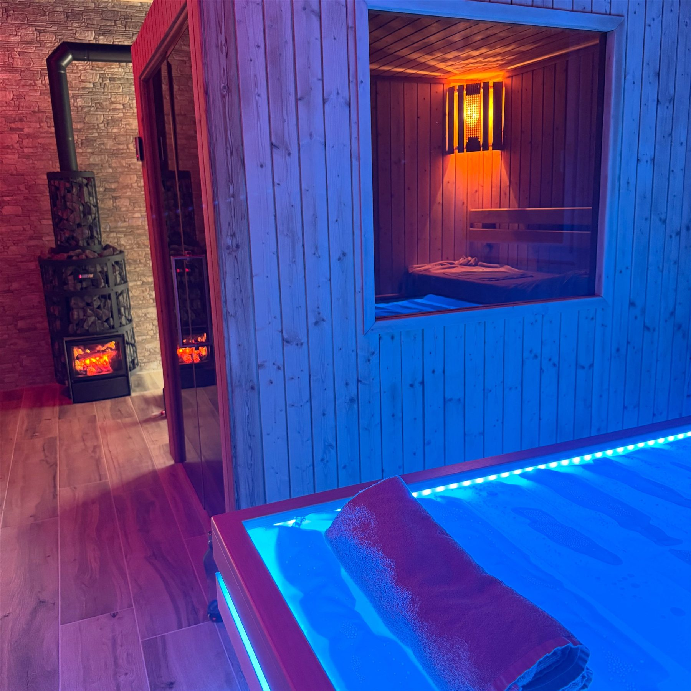
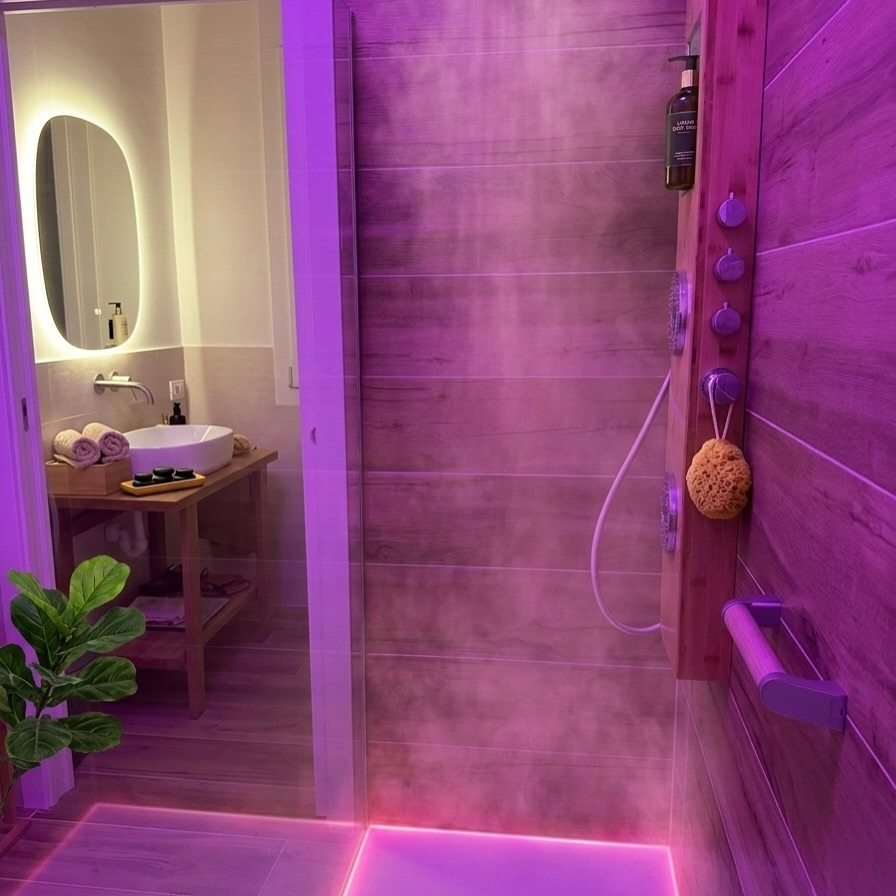

Le 8 sale / Sala 07 di 08 / Studio 2 · private spa
Due fuochi veri, davanti. Il resto lo fa il contrasto.
Sauna Harvia · Sauna finlandese · fronte camino a legna · vasca fredda a 10 °C · da 1 a 4 persone
Una sauna finlandese originale Harvia installata davanti a un camino a legna acceso. Cicli sauna e vasca fredda a dieci gradi, poi il massaggio sul lettino ad acqua calda, nello stesso ambiente. In uno spazio privato, per te o per il tuo gruppo.
Perché esiste
Volevo una sauna in cui il fuoco fosse vero e visibile.
La sauna finlandese è semplice: calore secco e alto, pochi minuti, poi il freddo. Quello che la trasforma in un rito è il contesto: la luce, il legno, il fuoco.
Lo Studio 2 è nato come spazio privato: niente orari da piscina, niente estranei. Una sauna, una vasca fredda, l'endless pool, il lettino ad acqua calda, la doccia cromatica. Per una persona, o per un gruppo fino a quattro.
E alla fine di ogni ciclo, le mani: la sauna prepara, il massaggio chiude.
Com'è stata progettata
Una Harvia davanti a un camino a legna.
La cabina è una sauna finlandese Harvia: legno chiaro, porta a vetro, stufa a pietre con la gettata d'acqua. Di fronte, sullo stesso asse, un camino a legna a vista: dalla panca guardi il fuoco mentre la stufa scalda alle spalle. Due fonti di calore vere, due tonalità di luce.
Accanto, la vasca di immersione fredda, a dieci gradi, con temperatura personalizzabile. Il protocollo completo alterna cicli sauna e vasca: il contrasto termico stimola la circolazione e la risposta antinfiammatoria, e lavora sulla regolazione del sistema nervoso autonomo.
Il massaggio non si fa dentro la sauna: si fa accanto, sul lettino con il materasso ad acqua calda che vedi nelle foto. L'acqua calda sotto la schiena aumenta il ritorno venoso e non comprime: spingo i liquidi da una parte e tornano dall'altra, senza una superficie rigida che li trattiene. E la sauna è lì, nello stesso ambiente: si abbina al massaggio senza spostarsi.
Tra una fase e l'altra: doccia con illuminazione cromatica regolabile, prodotti professionali, asciugamani in puro cotone. Ogni transizione è progettata perché tu non debba pensare a nulla.
La dotazione
- Sauna Harvia finlandese originale, stufa a pietre, 80–100 °C
- Fuoco Camino a legna a vista, di fronte alla cabina
- Freddo Vasca a 10 °C, temperatura personalizzabile
- Lettino Materasso ad acqua calda, accanto alla cabina: il massaggio si fa qui, non in sauna
- Doccia Illuminazione cromatica regolabile, prodotti professionali
- Allenamento Vogatore Fassi, set di manubri, panca regolabile
- Formule Singolo 90 min o 2 h · coppia 2 h o 2 h 30 · tre persone 3 h · quattro 3 h 30
Cosa succede nella seduta
Un'ora in Sauna Harvia, passo per passo.
Lo Studio 2 è tuo
Camino acceso, sauna in temperatura, asciugamani pronti. Nessun altro in sala.
Il fuoco davanti
10–15 minuti in sauna guardando il camino, poi la vasca fredda. Il tempo nel freddo lo decidi tu, respiro dopo respiro.
Si ripete, se vuoi
Con l'endless pool in mezzo, oppure direttamente la doccia cromatica, acqua, tè.
Su un corpo già aperto
Sul lettino ad acqua calda, a pochi passi dalla cabina: drenante Renata França o Detensionami, su vasi dilatati e muscoli morbidi.
I vantaggi
Quello che questa sala aggiunge alle mani.
Il contrasto fa lavorare i vasi
Caldo che dilata, freddo che restringe: un allenamento per la circolazione che il corpo sente per ore.
Sudorazione profonda
A 80–100 gradi si suda davvero, e il fuoco davanti rende i minuti leggeri.
Il lettino ad acqua calda
Il materasso ad acqua non comprime: spingo i liquidi da una parte e tornano dall'altra, senza una superficie rigida sotto. Il calore sotto la schiena aumenta il ritorno venoso.
Un massaggio su un corpo già aperto
Dopo i cicli, il drenante lavora in profondità invece di sbloccare la superficie.
Privato, davvero
Nessun altro in sala. Il tempo è tuo, o della tua coppia, o del tuo gruppo.
Il piano di sopra, se vuoi
Yoga nella shala e poi la sauna: il calore che fai di sopra lo finisci di sotto.
Per chi è
La stanza si sceglie insieme, seduta per seduta.
Nessuna sala è giusta per tutti. Queste sono le indicazioni che do di solito; il resto lo decidono i numeri dell'InBody e una chiacchierata.
È la sala giusta per
- Chi vuole un rituale completo, non solo un massaggio
- Coppie e piccoli gruppi che vogliono uno spazio tutto per sé
- Chi si allena e cerca il recupero
- Chi ama il fuoco, il freddo e il silenzio del legno
Meglio un'altra sala se
- Chi ha controindicazioni mediche al calore intenso o all'immersione fredda: parla prima con il tuo medico
- Chi vuole una sauna affollata con il bar: qui c'è il contrario
- Chi cerca il calore dolce per un massaggio: quella è la Biosauna, nello Studio 1
Perché non la trovi altrove
Una private spa con il fuoco a legna davanti alla sauna.
Sauna, vasca fredda, piscina a nuoto infinito, lettino ad acqua, doccia cromatica, piccola palestra: tutto in uno spazio privato, con due mani qualificate alla fine. Non è un centro benessere: è una sala in più dello studio.


Prima di prenotare
Quello che di solito mi chiedono su questa sala
Il massaggio si fa dentro la sauna?
No. Si fa sul lettino ad acqua calda nello stesso ambiente, a pochi passi dalla cabina: la sauna si abbina prima o dopo. Il massaggio dentro una cabina calda è un'altra sala, la Biosauna dello Studio 1.
Posso venire da solo?
Sì: 90 minuti con massaggio e sauna, oppure 2 ore con accesso completo alla sala.
In quanti al massimo?
Fino a quattro persone, con formule da 2 ore a 3 ore e mezza. Ognuno ha il suo massaggio.
La vasca a 10 gradi è obbligatoria?
No. La temperatura si personalizza e il tempo lo decidi tu. Anche solo i piedi va bene, la prima volta.
Dov'è lo Studio 2?
A Sant'Agostino di Albignasego, in un ambiente separato dallo Studio 1. L'indirizzo esatto arriva con la conferma dell'appuntamento.
Le otto sale
Otto sale. Un solo massaggio: il tuo.


Il passo successivo
Scrivimi: scegliamo insieme se è la sala giusta.
Due righe su WhatsApp con quello che cerchi. Ti rispondo io e, se vuoi, fissiamo la prima analisi InBody.
334 79 18 516